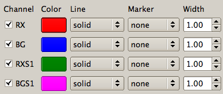
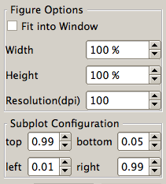

When press Undo menu or click the Undo icon in the Toolbar, the last script is deleted. In the Script inspecter, the script is deleted and the previous script result are plotted.
Wth this dialog, The line properties of the channels such as color, line style, marker type can be set.

Figure options such as width, height and size can be specified.
